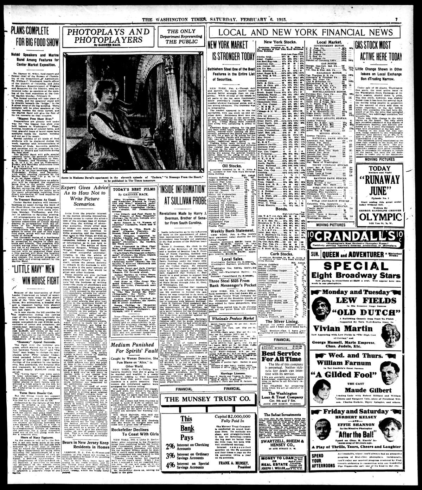

'Inside Information' at Sullivan Probe«Información interna» en la investigación de Sullivan
The Washington Times. Washington [D.C.], February 6, 1915. Page 7. Published by Times Pub. Co. A daily newspaper, 1902–1939.The Washington Times. Washington [D.C.], 6 de febrero de 1915. Página 7. Publicado por Times Pub. Co. Periódico diario, 1902–1939. View the originalVer el original

The Washington Times reported on congressional and departmental hearings investigating Minister James M. Sullivan's conduct and appointment under Dominican treaty relations. Witnesses detailed political influence and lobbying efforts involving customs appointments, while Assistant Secretary of State John B. Osborne testified that he had previously warned Santo Domingo against accumulating unauthorized debt. Osborne also noted receiving communications from former Customs Receiver Walter W. Vick that severely criticized Sullivan's actions.The Washington Times informó sobre audiencias legislativas y departamentales que investigaban la actuación y el nombramiento del ministro James M. Sullivan en el marco de los vínculos surgidos de los tratados dominicanos. Varios testigos detallaron las influencias políticas y las maniobras de cabildeo relativas a las designaciones aduaneras, en tanto el subsecretario de Estado John B. Osborne testificó haber alertado previamente a Santo Domingo sobre la acumulación de deudas no autorizadas. Osborne mencionó además haber recibido comunicaciones del exreceptor de aduanas Walter W. Vick en las que se reprobaban con dureza los actos de Sullivan.
FULL TEXT:TEXTO COMPLETO:
'INSIDE INFORMATION' AT SULLIVAN PROBE«INFORMACIÓN INTERNA» EN LA INVESTIGACIÓN DE SULLIVAN
Revelations Made by Harry J. Overman, Brother of Senator From South Carolina.Revelaciones hechas por Harry J. Overman, hermano del Senador de Carolina del Sur.
Inside information as to the influences at work on the appointment of American representatives in the Dominican government was brought out yesterday at the first session of the Sullivan hearing here.Información interna sobre las influencias en juego en el nombramiento de representantes estadounidenses en el gobierno dominicano salió ayer en la primera sesión de la audiencia Sullivan aquí.
Harry J. Overman, file clerk in the office of the Secretary of the Senate and a brother of Senator Lea S. Overman of North Carolina, testified concerning his efforts to obtain appointment as deputy receiver of customs at Santo Domingo under the treaty relations between the Dominican republic and the United States. He declared that he had been urged to apply for the place by a man named Gold, who, he said, suggested that William C. Beer would be a good person to support him for the place. Beer, he said he was told by Gold, could influence Secretary of State Bryan through John H. Grey, of Wilmington, Del.Harry J. Overman, secretario de archivo en la oficina del Secretario del Senado y hermano del Senador Lea S. Overman de Carolina del Norte, testificó sobre sus esfuerzos para obtener nombramiento como receptor auxiliar de aduanas en Santo Domingo bajo las relaciones de tratado entre la república dominicana y los Estados Unidos. Declaró que había sido instado a solicitar el lugar por un hombre llamado Gold, quien, dijo, sugirió que William C. Beer sería una buena persona para apoyarlo para el lugar. Beer, dijo que le fue dicho por Gold, podría influenciar al Secretario de Estado Bryan a través de John H. Grey, de Wilmington, Delaware.
Md. Overman testified that inasmuch as his own brother was unwilling to use his position to further his candidacy he was compelled to do much of the work himself. He said that he had met Mr. Beer at a hotel in Washington in company with Minister Sullivan.Md. Overman testificó que como su propio hermano no estaba dispuesto a usar su posición para adelantar su candidatura se vio obligado a hacer mucho del trabajo él mismo. Dijo que había conocido al Sr. Beer en un hotel en Washington en compañía del Ministro Sullivan.
John E. Osborne, First Assistant Secretary of State, stated that prior to the appointment of Mr. Sullivan, he had gone to Haiti and Santo Domingo on a secret mission for the Government. While there, he stated, he had warned the Dominican government against increasing its indebtedness.John E. Osborne, Primer Secretario Auxiliar de Estado, declaró que antes del nombramiento del Sr. Sullivan, había ido a Haití y Santo Domingo en una misión secreta para el Gobierno. Mientras estaba allí, declaró, había advertido al gobierno dominicano contra aumentar su deuda.
Regarding the Sullivan case, Secretary Osborne said that he knew practically nothing except that he had received personal letters from Mr. Vick, criticising the conduct of the minister.Respecto al caso Sullivan, el Secretario Osborne dijo que no sabía prácticamente nada excepto que había recibido cartas personales del Sr. Vick, criticando la conducta del ministro.
Others who were present were Joseph P. Tumulty, Secretary to the President; Assistant Secretary of State, Philips; Assistant Secretary of War Breckenridge, and Brigadier General McIntyre, chief of the Bureau of Insular Affairs, War Department.Otros que estuvieron presentes fueron Joseph P. Tumulty, Secretario del Presidente; el Secretario Auxiliar de Estado, Philips; el Secretario Auxiliar de Guerra Breckenridge, y el Brigadier General McIntyre, jefe de la Oficina de Asuntos Insulares, Departamento de Guerra.
At the outset of today's session Charles H. Strong, attorney, conducting the examination for Comimssioner Phelan, announced that the entire scope of the investigation was to inquire into the fitness, competence, and conduct of Minister Sullivan.Al comienzo de la sesión de hoy Charles H. Strong, abogado, conduciendo el examen para el Comisionado Phelan, anunció que el alcance entero de la investigación era indagar sobre la aptitud, competencia, y conducta del Ministro Sullivan.
“The Commissioner intends,” he said, “to run down any legitimate clue bearing on this case without fear or favor for anybody in or out of public office. He means to sift the case to the bottom. Necessarily, inasmuch as the lines upon which this investigation is being conducted are wholly different from court procedure, much hearsay testimony, or even gossip, must creep into the evidence. But as a result of this hearsay evidence we have already been able to unearth things of the utmost importance.”«El Comisionado intenta», dijo, «seguir cualquier pista legítima que tenga relación con este caso sin miedo ni favor para nadie dentro o fuera de un cargo público. Quiere filtrar el caso hasta el fondo. Necesariamente, como las líneas sobre las que esta investigación está siendo conducida son totalmente diferentes del procedimiento judicial, mucho testimonio de oídas, o incluso chisme, debe filtrarse en la evidencia. Pero como resultado de esta evidencia de oídas ya hemos podido desenterrar cosas de la mayor importancia.»
This collection gathers the coverage of the Dominican Republic in the American press, in the order it was published.Esta colección reúne la cobertura de la República Dominicana en la prensa estadounidense, en el orden en que se publicaron.